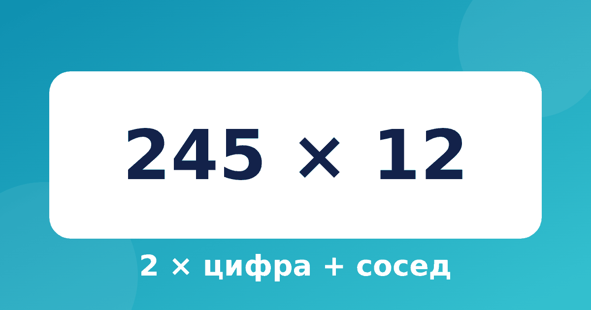

Как умножить на 12: удвоить цифру и прибавить соседа

Умножение на 12 нужно чаще, чем кажется: дюжина яиц, 12 месяцев, 12 часов на циферблате. В школьной таблице умножения на 12 нет, и ребёнок обычно считает столбиком. Правило из системы Трахтенберга позволяет ответить, не записывая ничего, кроме самого ответа. Здесь мы разберём умножение на 12 в уме, а точнее умножение на 12 по Трахтенбергу, с примерами и проверкой.
Правило
Поставьте перед числом нулик и считайте справа налево. Каждая цифра ответа равна удвоенной цифре плюс её сосед. Соседом называем цифру, которая стоит справа, а у последней цифры сосед невидимый нулик. Если получилось больше 9, пишем последнюю цифру, а десяток запоминаем и добавляем на следующем шаге.
Двузначное число: 23 × 12
Число с нуликами: 0 2 3 0.
- Цифра 3, сосед 0: 6 (2 × 3). Пишем 6.
- Цифра 2, сосед 3: 4 + 3 = 7 (2 × 2, сосед 3). Пишем 7.
- Нулик слева, сосед 2: 2 (сосед 2). Пишем 2.
Ответ 276.
Сравните с обычным подсчётом: 23 × 12 = 23 × 10 + 23 × 2 = 230 + 46 = 276. Совпало.
Трёхзначное число с переносом: 245 × 12
Здесь на каждом шаге появляется перенос, поэтому пример хорошо показывает суть.
- Цифра 5, сосед 0: 10 (2 × 5). Пишем 0, 1 запоминаем.
- Цифра 4, сосед 5: 8 + 5 + 1 = 14 (2 × 4, сосед 5, перенос 1). Пишем 4, 1 запоминаем.
- Цифра 2, сосед 4: 4 + 4 + 1 = 9 (2 × 2, сосед 4, перенос 1). Пишем 9.
- Нулик слева, сосед 2: 2 (сосед 2). Пишем 2.
Ответ 2940.
Проверка: 245 × 10 + 245 × 2 = 2450 + 490 = 2940. Всё верно.
Почему правило работает
Потому что 12 = 10 + 2. Число × 12 = число × 10 + число × 2. Число × 2 даёт «удвоенную цифру», а число × 10 сдвигает цифры на разряд, поэтому каждая цифра встречается с соседом. Расскажите это ребёнку на примере 23: «23 умножить на 10 — это 230, а ещё два раза по 23 — это 46. Складываем и получаем 276». Тогда правило будет понятным, а не выученным наизусть. Если ребёнок ещё не уверен в сложении, вернитесь к материалу про разрядное сложение.
Тренируемся
Закройте ответы, посчитайте по правилу и сверьтесь.
- 14 × 12 = 168
- 31 × 12 = 372
- 48 × 12 = 576
- 127 × 12 = 1524
- 263 × 12 = 3156
- 509 × 12 = 6108
Когда в примере есть цифры 5–9, удвоение даёт перенос. Следите за тем, чтобы ребёнок не терял единицу в уме: пусть пишет её над следующей цифрой маленьким кружком.
Типичные ошибки
- Прибавляют соседа слева, а не справа.
- Забывают удвоить цифру: пишут цифру + сосед, как при умножении на 11.
- Теряют перенос, особенно когда он получается два шага подряд.
- Не ставят нулик слева и не записывают последний перенос.
Вопросы и ответы
Можно ли умножать на 12 как на 11?
Похоже, но не совсем. При умножении на 11 цифра берётся как есть, а при умножении на 12 её нужно удвоить. Поэтому ответы для 11 и 12 отличаются, и путать правила нельзя.
Нужно ли знать таблицу умножения на 2?
Да, и очень хорошо. Удвоение цифр до 9 должно быть автоматическим, иначе правило для 12 будет медленнее обычного столбика. Если удвоение даётся трудно, потренируйтесь отдельно на цифрах от 1 до 9.
Как проверить ответ?
Умножьте число на 10 и прибавьте число, умноженное на 2. Для 245 это 2450 + 490 = 2940. Или используйте проверку девяткой: она ловит почти все ошибки в умножении.
План на неделю
Если вы хотите, чтобы правило закрепилось, не торопитесь: за неделю можно пройти путь от первого примера до свободного счёта.
- День 1. Удвоение цифр от 1 до 9 в быстром темпе, без умножения. Соседа и нулик повторите на трёх числах.
- День 2. Двузначные числа без переноса: 21, 32, 41, 13.
- День 3. Двузначные числа с переносом: 47, 58, 69, 95.
- День 4. Трёхзначные числа без нулей: 123, 234, 312.
- День 5. Трёхзначные числа с переносом: 245, 586, 899.
- День 6. Числа с нулями внутри: 105, 308, 450.
- День 7. Повторение и проверка: ребёнок сам придумывает примеры и проверяет их умножением на 10 плюс удвоением.
Каждый день хватит 5–10 минут. Если один день вышел неудачным, не переходите дальше, а повторите его.
Что дальше
Правила для 11 и 12 очень похожи, поэтому учить их удобно парой. Сначала освоите умножение на 11 по Трахтенбергу, потом добавите удвоение. В тренажёре «Быстрый счёт» для этого есть два отдельных модуля с пошаговыми заданиями: ребёнок сам пишет цифры ответа, а при ошибке видит подсказку с вычислением. Хватит 5–10 минут в день.